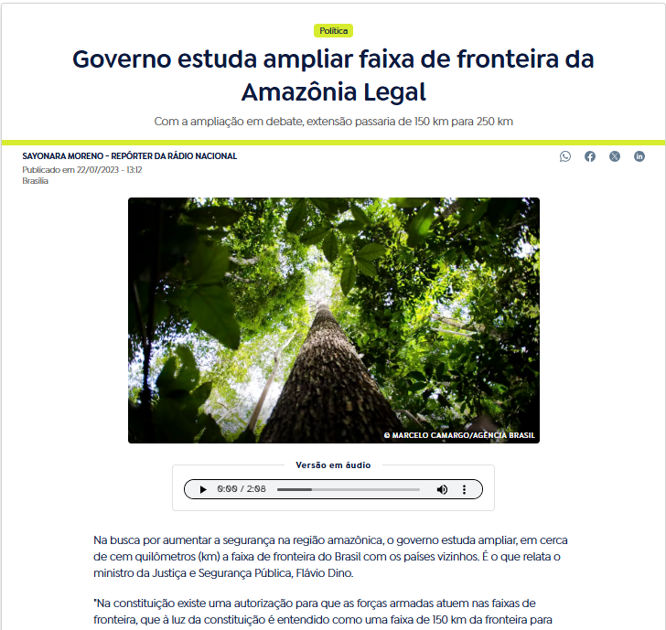
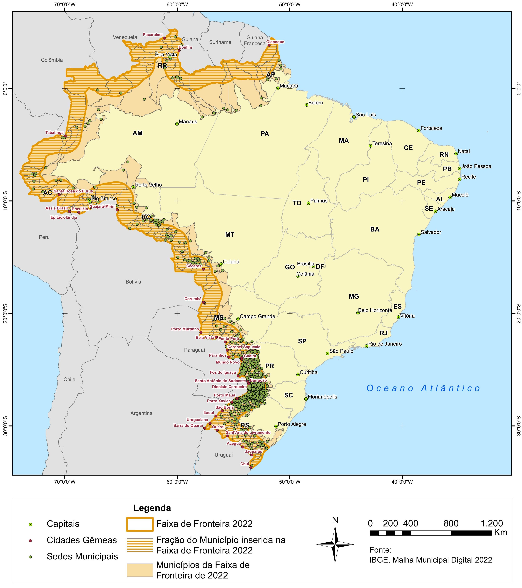
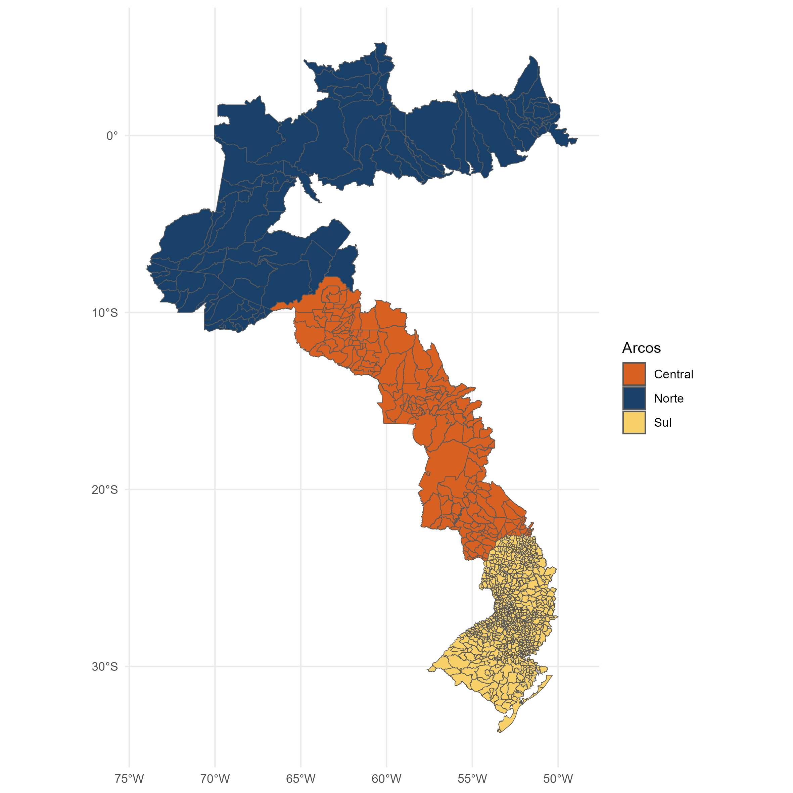
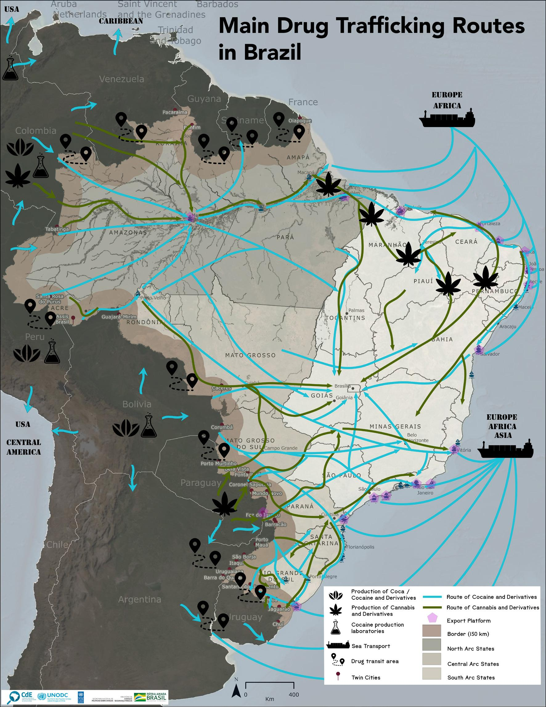
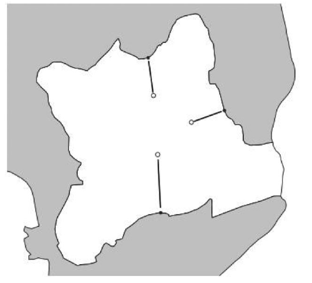
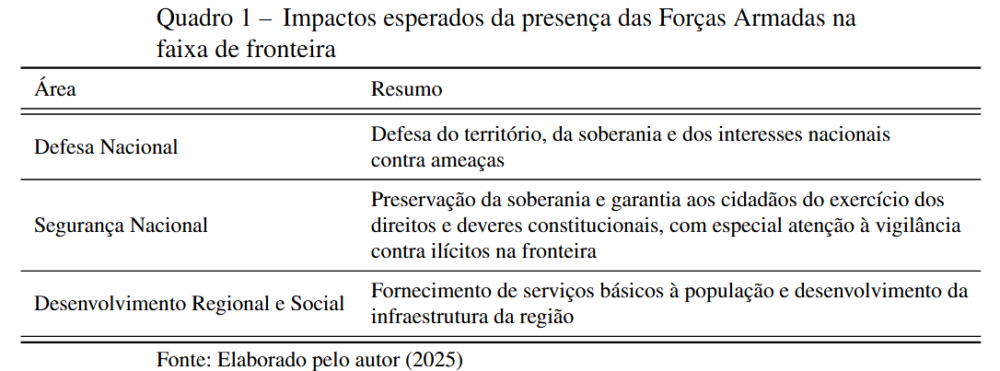
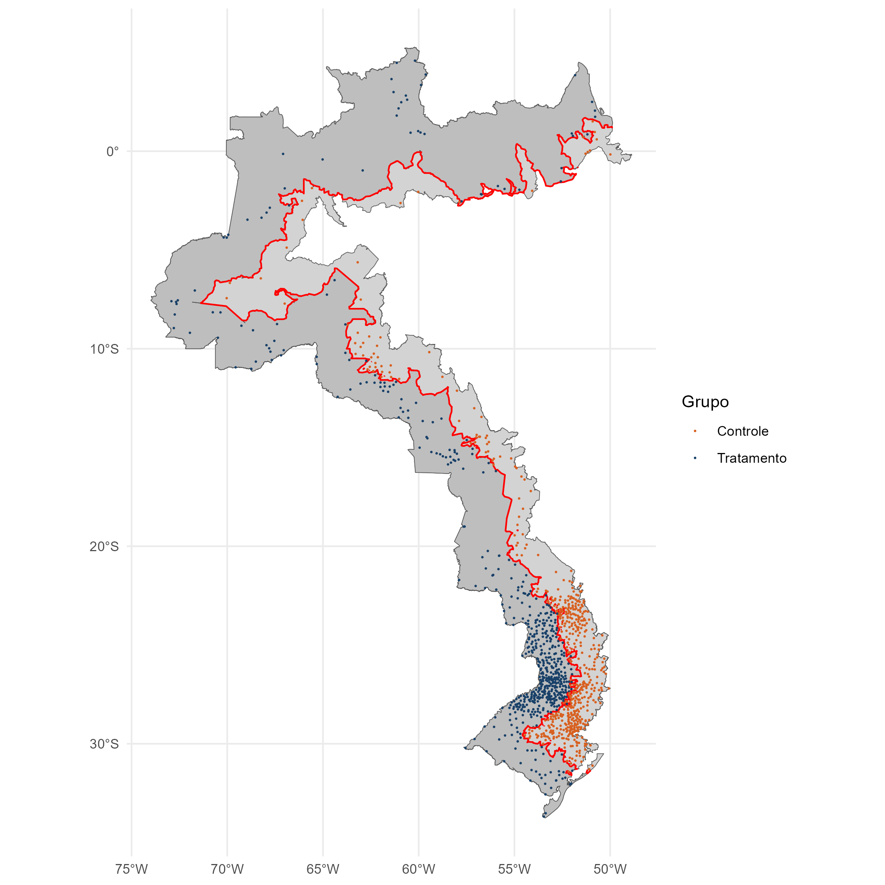

###############################The brazilian armed forces and the public security on the border: a spatial regression discontinuity design approach
Introduction

Definição:

A Faixa de Fronteira ocupa 27% do território Brasileiro
588 municípios, 11 estados, 16.886 km de fronteira
Arcos da Faixa de Fronteira Arco Norte (AP, PA, RR, AM, AC) Arco Central (RO, MT, MS) Arco Sul (PR, SC, RS)
Arcos

Arco Norte: Expansão do confronto entre facções (PCC e CV) Tráfico de drogas e crimes ambientais (extração de madeira, mineração) Rota de passagem para o crime transnacional Integração à economia local
Arco Central: Avanço da fronteira econômica (principalmente agrícola) Apreensões de drogas e grande corredores por onde passam o tráfico Tráfico formiga
Arco Sul: Desempenho urbano e econômico Maior presença das forças de segurança, Fronteira altamente regulada Alto grau de integração: Aumento do contrabando e do tráfico
Forças armadas
National Defense: Defense of territory, sovereignty and national interests against threats
National Security: Preservation of sovereignty and guarantee for citizens the exercise of constitutional rights and duties, with special attention to vigilance against illicit activities at the border
Social and Regional Development: Provision of basic services to the population and development of the region’s infrastructure
Objetivos
Revisão de literatura
Tratamento e controle
Conclusão
No Arco Norte, a presença das Forças Armadas na Faixa de Fronteira está associada a uma redução na taxa de homicídios;
No Arco Central, por outro lado, foi identificado um efeito contrário (contraintuitivo);
No Arco Sul, não foram encontrados efeitos estatisticamente significativos;
Conforme apresentado pela literatura, esses efeitos podem estar relacionados ao tamanho e à intensidade de operações de segurança em diferentes anos, como a Operação Ágata;
Dentre as classificações alternativas, o efeito sede e efeito forças armadas apresentaram padrões semelhantes à análise principal
Motivação I
Dinâmica da Violência e do Desenvolvimento Econômico na Faixa de Fronteira
A Faixa de Fronteira ocupa 27% do território Brasileiro
588 municípios, 11 estados, 16.886 km de fronteira
Arcos da Faixa de Fronteira Arco Norte (AP, PA, RR, AM, AC) Arco Central (RO, MT, MS) Arco Sul (PR, SC, RS)
Motivação II
Motivação III
Arco Norte: Expansão do confronto entre facções (PCC e CV) Tráfico de drogas e crimes ambientais (extração de madeira, mineração) Rota de passagem para o crime transnacional Integração à economia local
Arco Central: Avanço da fronteira econômica (principalmente agrícola) Apreensões de drogas e grande corredores por onde passam o tráfico Tráfico formiga
Arco Sul: Desempenho urbano e econômico Maior presença das forças de segurança, Fronteira altamente regulada Alto grau de integração: Aumento do contrabando e do tráfico
Motivação IV

Motivação V
Forças Armadas e Segurança na Faixa de Fronteira Políticas de Defesa Programa Calha Norte (PCN)Sistema de Monitoramento Integrado de Monitoramento de Fronteira (SISFRON)Operação Ágata, Política Nacional de Defesa (PND) e a Estratégia Nacional de Defesa (END)
Políticas de SegurançaEstratégia Nacional de Segurança Pública nas Fronteiras (Enafron)Projeto Unidades Especializadas de Fronteiras (Pefron, 2008)Plano Estratégico de Fronteiras (PEF, 2011)Programa de Proteção Integrada de
Objetivos
O objetivo geral deste estudo é avaliar o impacto das políticas aplicadas na Faixa de Fronteira sobre a segurança pública, com especial atenção à atuação das Forças Armadas.
Quanto aos objetivos específicos: Analisar os efeitos da descontinuidade geográfica gerada pela Faixa de Fronteira sobre as taxas de homicídio; Investigar heterogeneidades nos efeitos da Faixa de Fronteira sobre a violência, considerando diferenças nos fatores socioeconômicos, arcos e períodos. Avaliar a robustez dos resultados utilizando diferentes configurações de amostra que isolam efeitos específicos
Design de Regressão Descontínua
##Revisão de Literatura I: Design de Regressão Descontínua Configuração básica de um modelo RD: Thistlethwaite e Campbell: impacto de prêmios de mérito escolar no futuro acadêmico dos estudantes. Prêmios eram atribuídos com base em uma determinada nota: estudantes cuja pontuação \(X\) atingisse ou excedesse um valor de corte \(c\) eram agraciados, enquanto aqueles com pontuação inferior não eram contemplados. Esse mecanismo gera uma no tratamento como função da nota. Seja a recepção do tratamento representada por \(D \in {0,1}\), temos então \(D=1\) se \(X\geq c\) e \(D=0\) se \(X<c\) \end{itemize} \[\begin{equation} Y = \alpha + D\tau + X\beta + \varepsilon \end{equation}\]
Revisão de Literatura II}

Essa regressão é estimada em uma subamostra dos dados que é estatisticamente otimizada perto do valor do ponto de corte. A razão pela qual todos os dados disponíveis não são utilizados deve-se ao trade-off entre variância e viés Três elementos importantes para lidar com RD Variável de corte (Running variable) Ponto de corte (Cutoff) Janela, ou largura de banda (Bandwidth)
Revisão de literatura III: Design de Regressão Descontínua Espacial
Uma das principais limitações do RD tradicional em dados espaciais é sua dependência de um ponto de corte unidimensional.Enquanto o RD tradicional utiliza uma variável contínua para definir o cutoff, em contextos espaciais, a fronteira é bidimensional, frequentemente representada por coordenadas geográficas. Isso exige métodos que possam lidar com a natureza multidimensional das fronteiras geográficas.

%% ————————————————————————— # Metodologia

Metodologia II
Definição dos grupos de tratamento e controle
